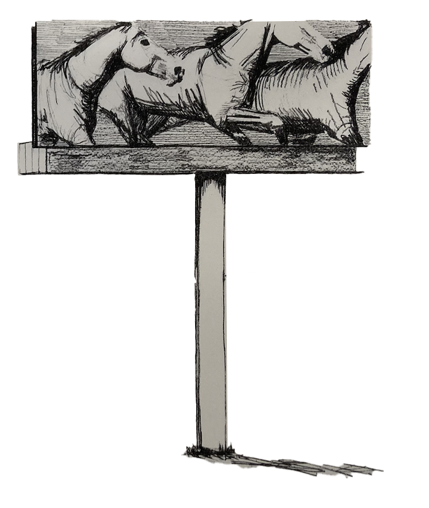

Hunter Bailey
Hunter Bailey is an oil painter from Colorado, currently living and working in Salt Lake City, Utah and Brooklyn, New York. He received his BFA in Painting from the University of Utah in 2024. Bailey’s work explores themes of consumerism, nihilism, and the search for meaning in contemporary life. His paintings often depict objects like cars, mattresses, and heavy machinery—symbols of modernity and utilitarianism that invite viewers to reconsider their relationship with the material world.
hunterhbailey@gmail.com
